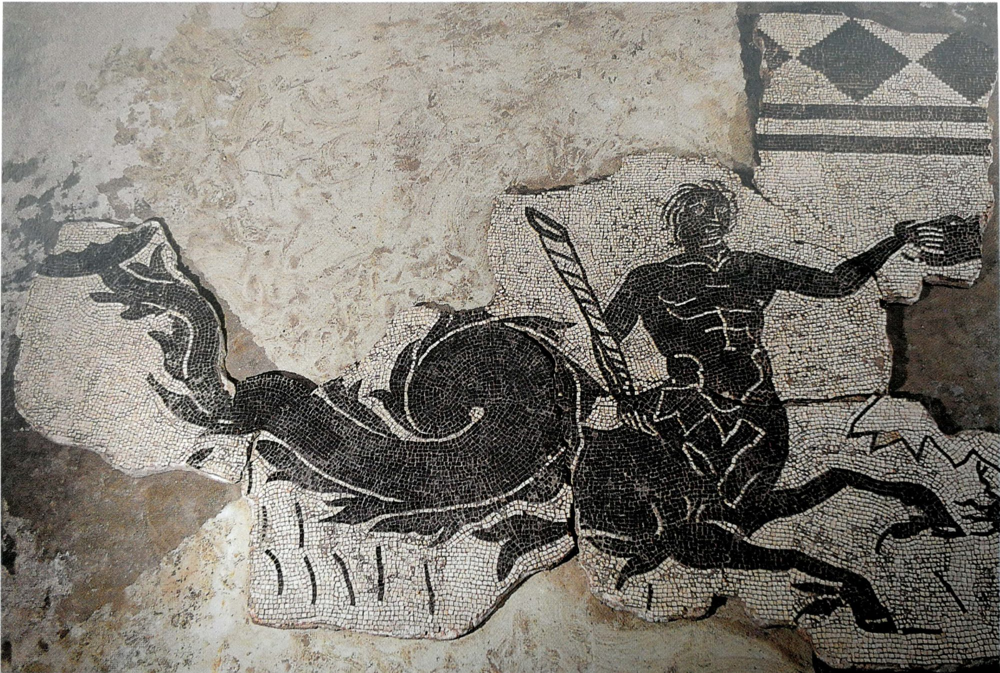

"Creua ara el cor de la ciutat cap al lloc on el vapor i l'aigua reconfortaven el cos després de la fatiga. El meu pare i jo vam alçar allà les Termes de Barcino per a orgull de la colònia.
Busqueu la plaça que s'amaga rere el gran palau del govern de la ciutat. Allà on la història se sumergeix sota el terra, us espero."